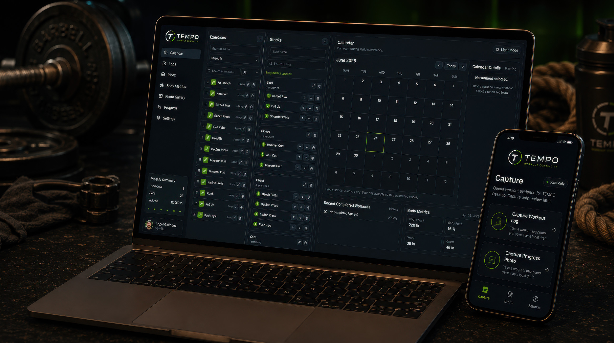
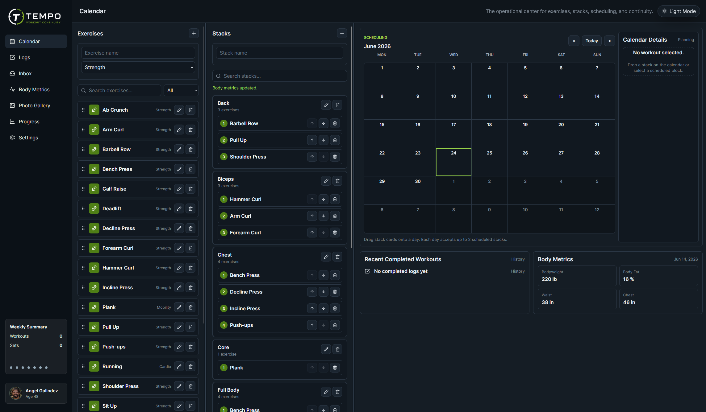
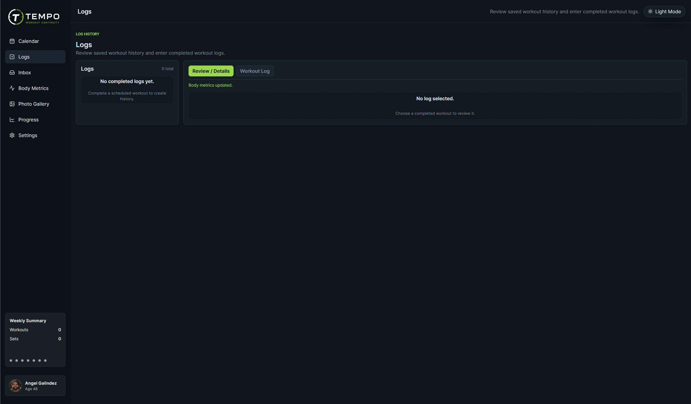
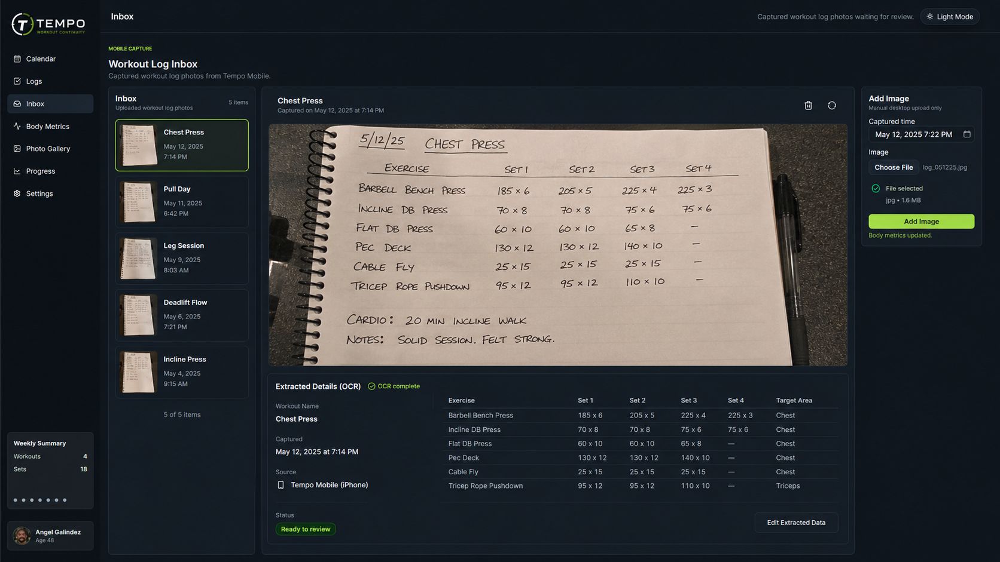
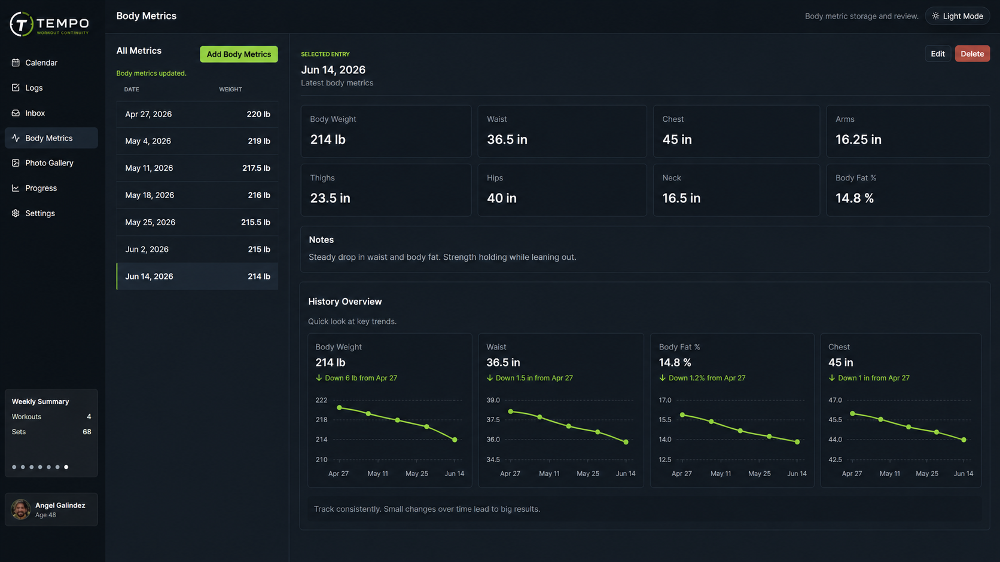
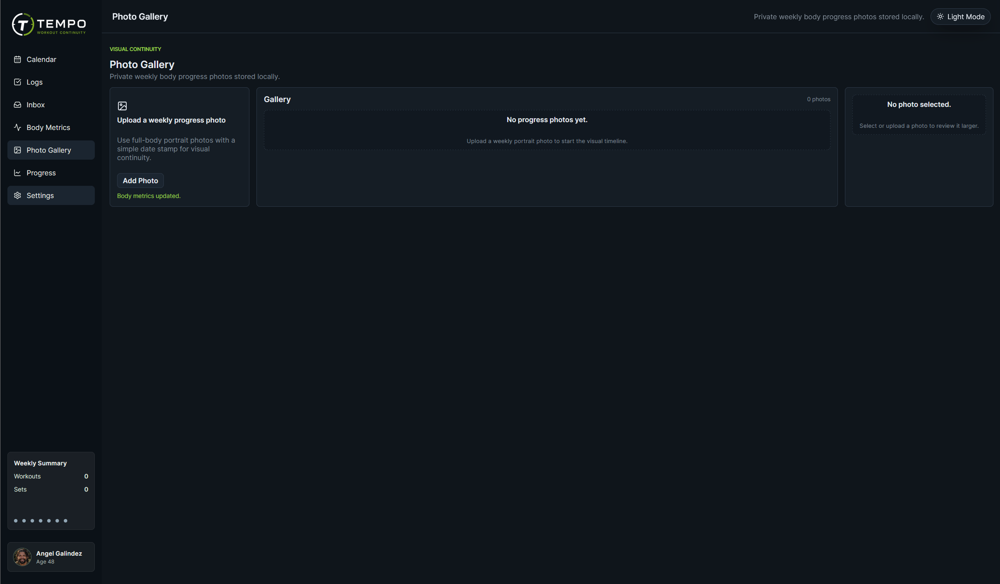
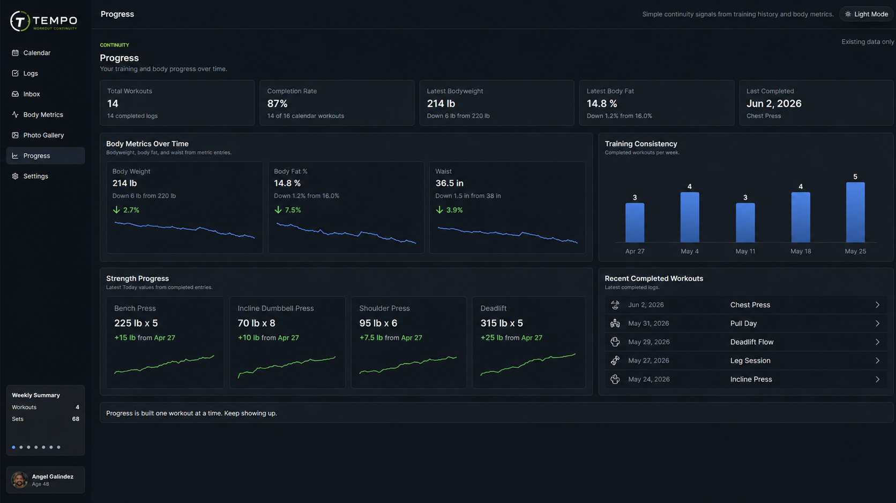
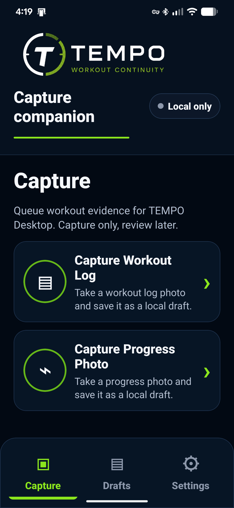

Exercises
Build your training library.

Fitness should demand discipline—not paperwork.
Plan your workouts in minutes, train without interruption, capture your progress with a single photo, and preserve the evidence of your journey.
What Tempo Is
Tempo exists to remove the friction between you and your fitness goals.
It is not another app trying to keep you engaged with the software. It is a quiet system for planning your training, capturing your workouts, preserving your progress, and showing you the evidence your body is already providing.
Tempo does not try to become your coach, your critic, or your motivation.
It gets out of the way so you can focus on the work.
The Tempo Workflow
Build your training library.
Group exercises into reusable workouts.
Schedule complete weeks in minutes.
Bring the plan into the real world.
Focus on the workout, not the app.
Take one photo when finished.
Confirm the extracted workout data.
Store the evidence in Tempo.
See progress over time.
Everything In Its Place
Build complete weeks of training in minutes by organizing exercises into reusable workout stacks and scheduling them on the calendar.

Preserve every completed workout without rebuilding it manually inside the application.

Review captured workout log photos and OCR results before they become part of your history.

Track bodyweight, measurements, and other physical metrics without unnecessary complexity.

Create a private visual timeline of body progress photos — the proof of what consistency is doing.

See training history, body metrics, and consistency signals at a glance.


Capture Without Breaking Your Flow
Tempo Mobile is a companion, not another dashboard.
Use it to capture two kinds of evidence: workout log photos and progress photos.
Write the workout down while you train. Take a picture when you are done. Review it later in Tempo Desktop.
No wearable required. No subscription hardware. No rings, watches, heart monitors, or extra devices.
Built Around Evidence
Tempo preserves the three kinds of evidence that matter most.
Together they create an honest, complete, and unbroken history of your training.
Your Body Tells The Truth
Tempo’s progress photo archive creates a private visual record of your journey. It does not judge, coach, shame, or congratulate. It simply preserves the proof.
Have you been disciplined, training consistently, and eating properly? The photos prove it. Have you drifted, skipped workouts, or lost focus? The photos prove that too.
Tempo does not manufacture motivation. It reflects reality.
Designed To Return Your Attention
Tempo is built from the same philosophy behind the rest of the Angel Galindez ecosystem: technology should amplify human intention without consuming human attention.
It reduces data entry, avoids unnecessary hardware dependency, lowers cognitive load, and keeps your focus on training.
Technology should amplify intention, not consume attention.
— Angel Galindez
Read the philosophyTempo makes sure it is not forgotten. Every planned workout, completed log, body metric, and progress photo becomes part of a larger record — not just of what you did, but of who you are becoming.